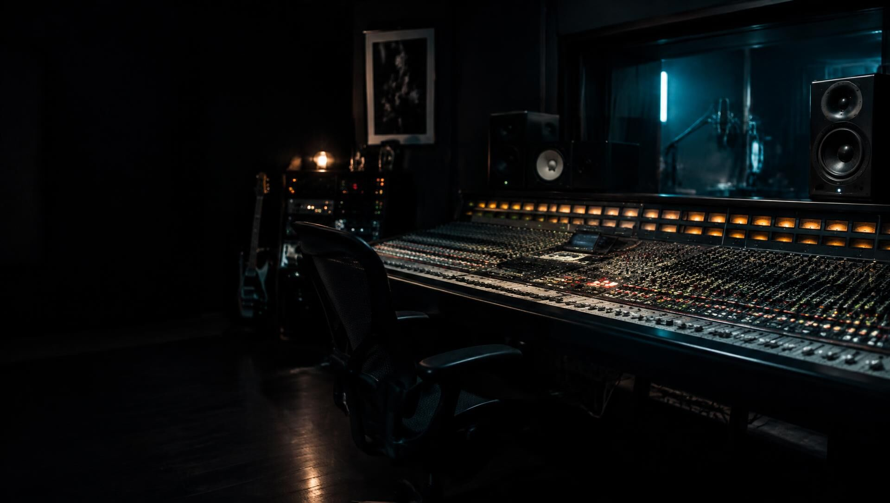

Sound Engineering
The technical side
of the craft.
Behind every finished production is a chain of technical disciplines. Wave's sound-engineering work covers recording, editing, processing and assembly — and the studio environment that makes reliable decisions possible.
01
Recording
Session setup, microphone selection and placement, gain staging and capture of clean, usable source material.
02
Editing & Processing
Timing and comping, noise management, clean-up and the processing needed to prepare material for mixing.
03
Studio Workflows
Organised sessions, signal routing and practical workflows that keep productions moving and decisions repeatable.

Studio & Audio System Integration
You can only judge what you can hear accurately.
Studio configuration, monitoring systems, speaker placement, equipment integration and practical audio setup — informed by years of working in production rooms, not just installing them.
- Studio configuration
- Monitoring systems
- Speaker placement
- Equipment integration
Enquiries
Have an Audio Project in Mind?
For audio production, composition, mixing, mastering, broadcast audio, and sound-engineering enquiries, contact Wave Audio to discuss your requirements.
Contact Wave Audio